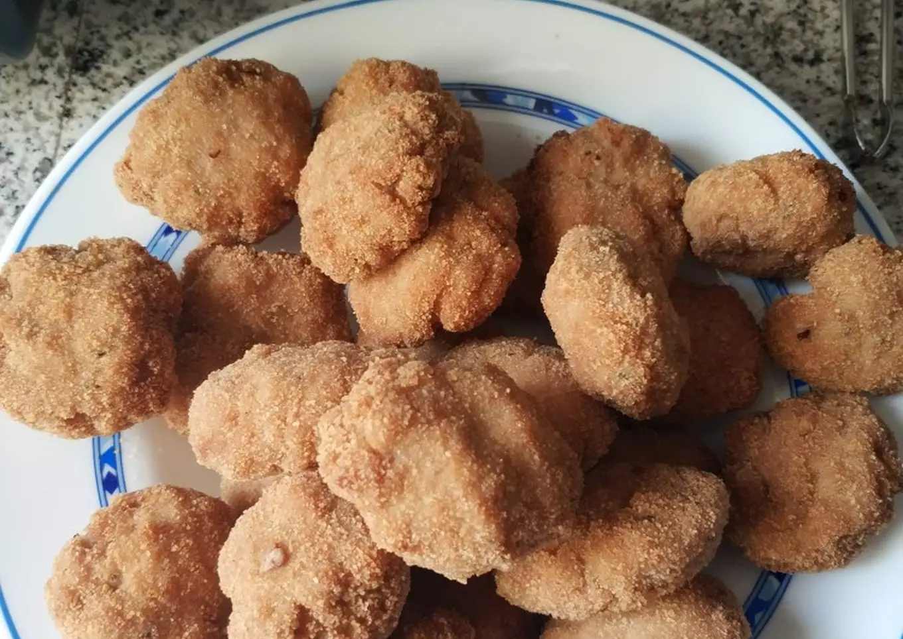
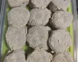
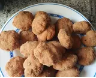

A delight within everyone's reach
In Utrera, the typical Russian fillets are called locos and can be found in many bars in the area.
They are usually served with a little mayonnaise and/or fried tomato on top.
Ingredients
-
1 Kg mixed minced meat
-
1 onion
-
2 cloves of garlic
-
2 eggs
-
1 lemon
-
50-100 grams bread crumbs
-
to taste Salt, pepper and parsley
-
Bread crumbs for breading
Recipe Instructions
-
Chop the garlic and onion in a mincer.
-
In a large bowl, mix the minced meat with the garlic and chopped onion.
-
Beat the two eggs and mix with the meat.
-
Squeeze the juice of one lemon.
-
Squeeze the juice of one lemon and mix it with the meat, avoiding the seeds.
-
Add the spices and salt to the meat.
-
Add the spices and salt to taste. Add the breadcrumbs to make the meat more consistent.
-
Once everything is mixed, make medium-sized balls with the meat, flatten them and roll them in the egg
and breadcrumbs. If you want, when you finish this step you can freeze them to have them later.

-
They are passed through the fryer until golden brown, about 4-5 minutes.
-
Optionally, serve with mayonnaise and/or tomato.

Return to top
Return to main page